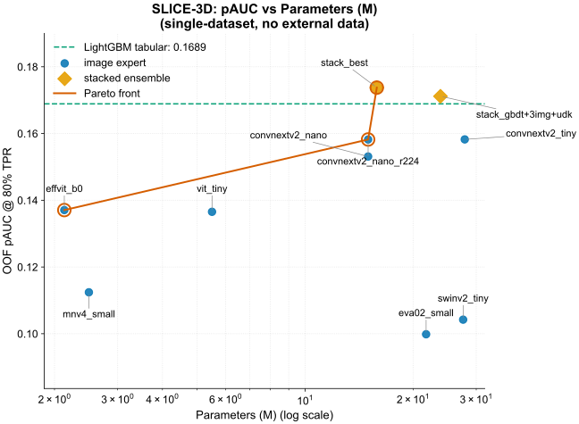
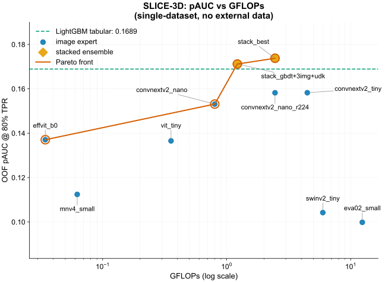
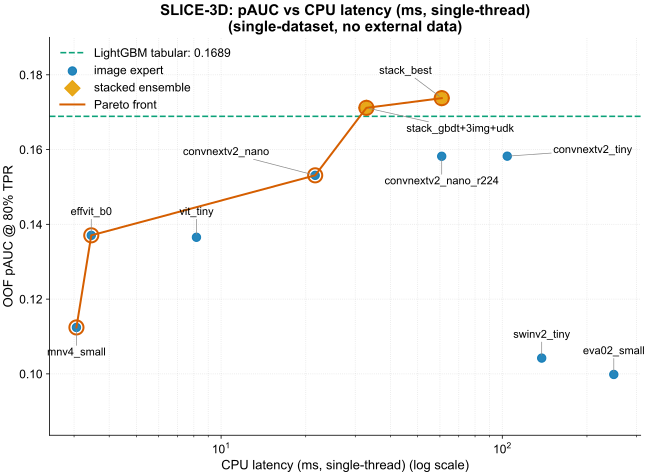
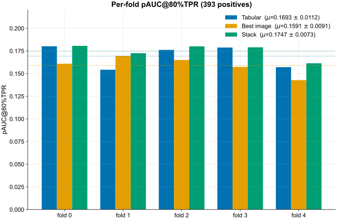
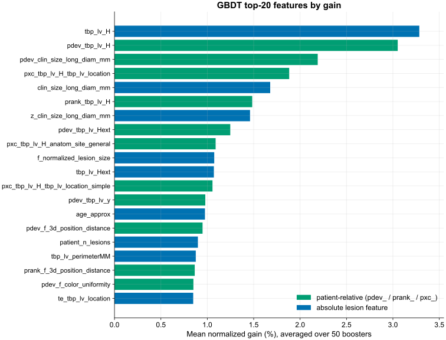
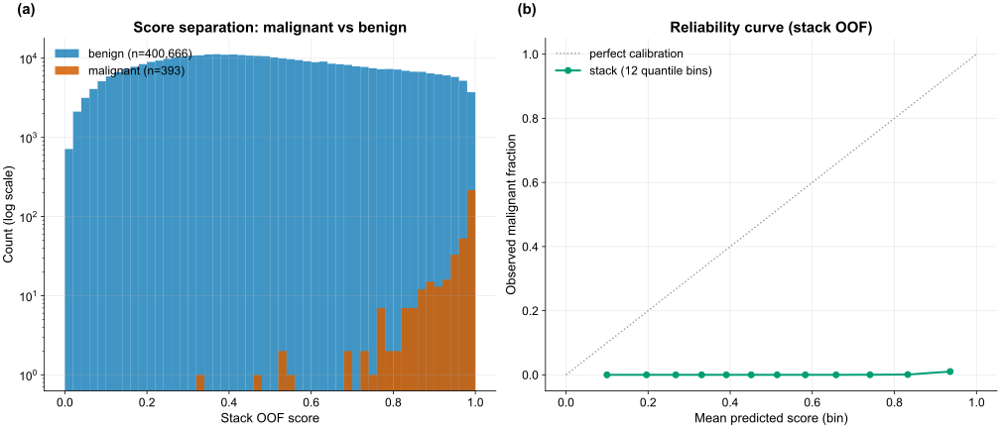

Results
The three-axis Pareto frontier, the scored ROC region, per-fold stability, and calibration
All numbers are out-of-fold on the frozen patient-grouped folds (5 folds, SEED = 42), scored only by src/cv.py at 80% TPR, and independently re-derived from the OOF parquet files by the cv-guardian agent. Figures come from reports/frontier.py and reports/perf/make_perf.py.
Headline numbers
| Model | OOF pAUC@80%TPR |
|---|---|
| Tabular GBDT | 0.16890 |
| Best image (ConvNeXtV2-nano @224) | 0.15821 |
| Stack — rank-avg[GBDT, nano@224] | 0.17376 |
The stack reconstruction rank-avg[gbdt, r224] recomputes to 0.17376, matching the canonical stack_oof.parquet exactly; the combiner is a 2-way rank average. Image and tabular make complementary errors, so the rank-average yields +0.0049 over tabular alone.
Tabular progression
| Configuration | OOF pAUC@80%TPR |
|---|---|
| Step 0 — broken: is_unbalance + AUC early-stop | 0.09941 |
| Step 1 — fixed early-stopping / objective | 0.11826 |
| Step 2 — wide patient-relative ugly-duckling features | 0.14420 |
| Step 3 — greysky-bagged + cross feats + CatBoost ensemble | 0.16890 |
The tabular expert progresses from a broken baseline (0.09941) to the production LightGBM+CatBoost ensemble (0.16890); the patient-relative feature block is the single largest step (see Ablations → Tabular).
The quality-vs-cost frontier (three axes)
A point is Pareto-optimal if no other model is both cheaper and more accurate. The frontier is drawn against all three cost axes, since cost means different things in different deployments.
Combined view

Versus parameters

Versus FLOPs

Versus CPU latency

All experiments and the Pareto-optimal set
| Model | OOF pAUC@80%TPR | Params (M) | GFLOPs | CPU latency (ms) | Pareto-optimal |
|---|---|---|---|---|---|
| Stack (rank-avg: GBDT + nano@224) | 0.17376 | 15.84 | 2.4550 | 60.91 | Yes |
| Stack (GBDT + 3 images + ugly-duckling) | 0.17117 | 23.84 | 1.2200 | 32.86 | Yes |
| Tabular GBDT (LightGBM + CatBoost) | 0.16890 | 0.86 | 0.0000 | 0.02 | Yes |
| ConvNeXtV2-tiny @224 | 0.15824 | 27.87 | 4.4697 | 104.14 | — |
| ConvNeXtV2-nano @224 | 0.15821 | 14.98 | 2.4550 | 60.89 | — |
| ConvNeXtV2-nano @128 | 0.15311 | 14.98 | 0.8016 | 21.61 | — |
| EfficientViT-b0 @128 | 0.13706 | 2.13 | 0.0345 | 3.45 | — |
| ViT-tiny @128 | 0.13654 | 5.50 | 0.3560 | 8.17 | — |
| MobileNetV4-small @128 | 0.11242 | 2.49 | 0.0624 | 3.06 | — |
| SwinV2-tiny @256 | 0.10422 | 27.58 | 5.9615 | 138.07 | — |
| EVA-02-small @336 | 0.09984 | 21.74 | 12.4085 | 249.18 | — |
CPU latency is single-thread, one image; GBDT GFLOPs reported as 0.0 (tree ensemble, not FLOP-comparable). Pareto-optimal on the pAUC-vs-latency axis.
- The GBDT alone is near-free and already at 0.169; it dominates every image-only model on cost and most on accuracy. This motivates the GBDT-first architecture.
- The image expert earns its place only inside the stack: +0.0049 pAUC for +60 ms. Whether that trade is worthwhile is a deployment decision, which is why a frontier is reported, not a single number.
- The heavy backbones (
mnv5_300mat 294 M / 765 ms,eva02_small,swinv2_tiny) are far off the frontier, dominated on both axes. Added capacity reduces the score at 393 positives.
The scored ROC region


The shaded band is the region the metric integrates — the area under the ROC for TPR ≥ 0.80 (equivalently FPR ≤ 0.20). In that band the stack sits above both single experts: the +0.0049 lift is concentrated where it is scored, not in low-sensitivity operating points.
Per-fold stability

| Fold | Tabular | Best image | Stack |
|---|---|---|---|
| 0 | 0.18014 | 0.16087 | 0.18061 |
| 1 | 0.15424 | 0.16947 | 0.17246 |
| 2 | 0.17614 | 0.16499 | 0.18003 |
| 3 | 0.17871 | 0.15733 | 0.17898 |
| 4 | 0.15708 | 0.14277 | 0.16139 |
| mean ± std | 0.1693 ± 0.0112 | 0.1591 ± 0.0091 | 0.1747 ± 0.0073 |
At 393 positives, per-fold pAUC swings by ~0.025 (tabular ranges 0.154 → 0.180), so fold-to-fold variance exceeds the gap between models; a single-fold number would be untrustworthy. The stack has the lowest std (0.0073) and wins or ties on every fold — the strongest evidence the +0.0049 is real, and it is both the most accurate and the most stable estimator.
Feature importance

Aggregated mean gain over 25 LightGBM + 25 CatBoost boosters (each booster normalized to sum = 1 for cross-library comparability, then averaged):
| Rank | Feature | Gain % |
|---|---|---|
| 1 | tbp_lv_H (hue) |
3.28 |
| 2 | pdev_tbp_lv_H |
3.05 |
| 3 | pdev_clin_size_long_diam_mm |
2.19 |
| 4 | pxc_tbp_lv_H_tbp_lv_location |
1.88 |
| 5 | clin_size_long_diam_mm |
1.68 |
| 6 | prank_tbp_lv_H |
1.48 |
| 7 | z_clin_size_long_diam_mm |
1.46 |
| 8 | pdev_tbp_lv_Hext |
1.25 |
| 9 | pxc_tbp_lv_H_anatom_site_general |
1.09 |
| 10 | f_normalized_lesion_size |
1.07 |
Patient-relative ugly-duckling features (pdev_ / prank_ / pxc_) make up 56% of top-20 gain and ~65% of total gain. A lesion’s deviation from its own patient’s distribution is the dominant signal, confirming the tabular architecture.
Score separation & calibration

Malignant score-mass concentrates near 1.0 and benign mass near 0.0, with the mid-range overlap penalized by the partial-AUC region. The reliability curve shows the model separates classes well by rank but is far from probability-calibrated (observed malignant fraction stays ≈0 even in the top bin). Under 0.1% prevalence and a rank-based metric, calibration is irrelevant to pAUC.
The CV → private projection
The field saw a ~0.013–0.021 public→private drop on this task even with clean CV, driven by the 393-positive scale and (for the winners) reliance on external/synthetic data. The headline is OOF CV 0.1738 (stack) / 0.1689 (tabular); a fair private-test projection is headline minus ~0.01–0.02. Because no part of the pipeline saw out-of-distribution data, the OOF number is a conservative predictor of generalization.
Leaderboard context
| Solution | External data? | Synthetic data? | pAUC |
|---|---|---|---|
| 1st — Ilya Novoselskiy (EVA-02 + EdgeNeXt + GBDT) | Yes | Yes (~30k) | 0.17264 |
| 2nd — uchiyama33 (image + tabular ensemble) | Yes | Yes | — |
| 3rd — kyohei-123 (image + tabular blend) | Yes | Yes | — |
| Ours (single-dataset, no external, no synthetic) | No | No | CV 0.17376 |
Champions used external ISIC-archive dermoscopy and synthetic positives, both banned here; their own ablation reports the ~30k synthetic lesions added only +0.0007 pAUC. Ours is an out-of-fold CV number, not private LB.
The constrained CV result (0.17376) sits in the same range as the unconstrained 1st-place private pAUC (0.17264), achieved without the external and synthetic data the champions relied on. The out-of-fold CV is not directly comparable to a private-LB number; see Submission and Credits.
Continue to Ablations →